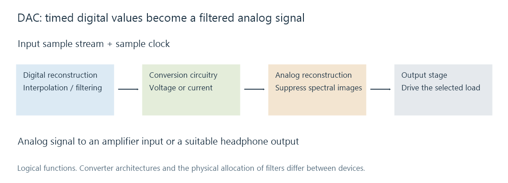

Digital-to-analog conversion (DAC)
A DAC converts timed digital samples into an analog signal using conversion circuitry, reconstruction filtering, and an output stage.
The loudspeaker ultimately needs an electrical waveform. A digital-to-analog converter, or DAC, turns a timed stream of digital sample values into an analog voltage or current that can feed an output stage.
The DAC may be in a phone, television, USB interface, receiver or powered speaker. With an Emby player sending audio to a receiver digitally, the receiver can perform the conversion. A phone's analog headphone connection uses conversion within the phone or its attached adapter. Locating that boundary explains which device's output circuitry is actually being used.

Reconstructing a waveform from samples
A sample is a value at a time, not a little sound fragment that needs to be audibly held until the next one. The combination of sample rate, sample values and reconstruction defines the continuous signal.
A simple hold-type DAC creates a staircase-like intermediate output with additional spectral images around the sampling frequency. Reconstruction filtering retains the intended baseband and attenuates those images. Modern audio converters commonly use digital interpolation and oversampling before the final analog stage, allowing the analog filter's transition to occur farther from the audible band.
Different converter architectures realize that process differently. A delta-sigma DAC may use a rapidly changing internal representation rather than directly outputting one physical voltage for each input PCM number. The supplied “24-bit, 48 kHz” format describes the input signal; it does not describe every internal switching step.
The output clock also determines when values are converted. The delivery of packets into a buffer and the conversion of samples out of that buffer are separate activities. A USB transfer can be irregular in packet size while a DAC converts at a steady device-clock rate.
A gain number becomes a voltage
Suppose a hypothetical DAC produces 2 V RMS for a full-scale sine at its line output. An amplitude multiplier of 0.5, equivalent to about −6.02 dB, gives 1 V RMS for the same waveform. A multiplier of 0.25 gives 0.5 V RMS.
| Digital amplitude multiplier | Gain relative to full scale | Output in this example |
|---|---|---|
| 1.00 | 0 dB | 2.0 V RMS |
| 0.50 | −6.02 dB | 1.0 V RMS |
| 0.25 | −12.04 dB | 0.5 V RMS |
These are illustrative line-output values, not a specification for every DAC or headphone port. The amplifier gain and speaker/headphone sensitivity determine the acoustic result.
A digital volume control scales the samples before conversion. An analog control attenuates the converted signal later. The location affects the relationship between programme level, converter noise and output-stage noise.
Reading the analog specifications
Input bit depth is a supported representation. Usable analog performance is described by measurements such as signal-to-noise ratio, distortion, frequency response and output level under stated conditions. Accepting 32-bit data does not imply 32 bits of noise-free analog resolution.
The electrical load matters too. A line output designed to feed a high-impedance amplifier input and a headphone output designed to drive a lower impedance have different current and output-stage requirements. A clean digital input can still meet an analog stage that overloads or cannot drive the selected load.